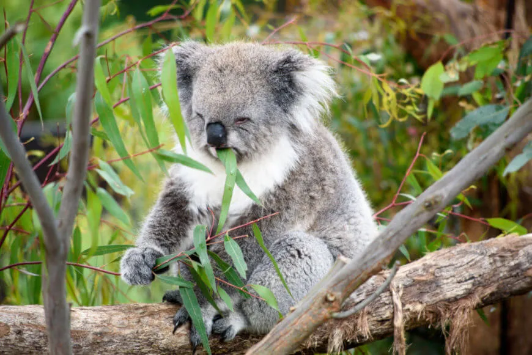

Características físicas dos coalas
Os coalas têm um corpo robusto, com pelos grossos e macios, geralmente de cor cinza, e um focinho grande e arredondado. Suas patas possuem garras afiadas e são adaptadas para segurar galhos de árvores, uma habilidade fundamental para sua vida arborícola.
Uma das características mais notáveis dos coalas é a presença de um polegar oposto, que lhes permite agarrar firmemente os galhos enquanto se movem pelas árvores. Eles também possuem uma excelente visão noturna, o que os ajuda a se alimentar durante a noite.
O tamanho dos coalas varia dependendo da região onde vivem. Os coalas do norte da Austrália são geralmente menores do que os do sul, pesando entre 4 e 15 quilos.
O coala tem a cabeça pequena, o focinho curto e os olhos bem separados. O nariz é grosso e achatado, e está munido de grandes narinas em forma de V, com as fossas nasais muito desenvolvidas, que mexem no seu equilíbrio térmico. Tanto os membros anteriores como os posteriores possuem cinco dedos. O polegar das patas posteriores é bastante pequeno, não sendo dotado de garras. Os outros dedos são fortes e terminam em garras alongadas. Nas patas posteriores, apenas o polegar é oposto aos outros dedos.
A pelagem é densa e sedosa, desempenha papel importante na regulação térmica e na proteção dos agentes atmosféricos. Como o coala não constrói um abrigo, dorme exposto ao sol e à chuva. A pelagem do dorso é muito densa e de uma coloração escura que absorve o calor. Torna-se mais escassa durante o verão e mais comprida durante o inverno. Possui um bom equilíbrio e músculos possantes nas coxas, e quando escala uma árvore, a falta de cauda é compensada pelos dedos bastante largos e pelas garras muito desenvolvidas. O intestino grosso, onde, por meio de fermentação bacteriana, se dá a digestão da celulose, é muito desenvolvido. O ceco, situado no início do intestino grosso, pode atingir 2,5 metros de comprimento. Além disso, possui na parede do estômago uma glândula complexa dita cardiogástrica que desempenha papel importante na digestão. A cloaca tem três funções: serve para o acasalamento, para urinar e defecar.